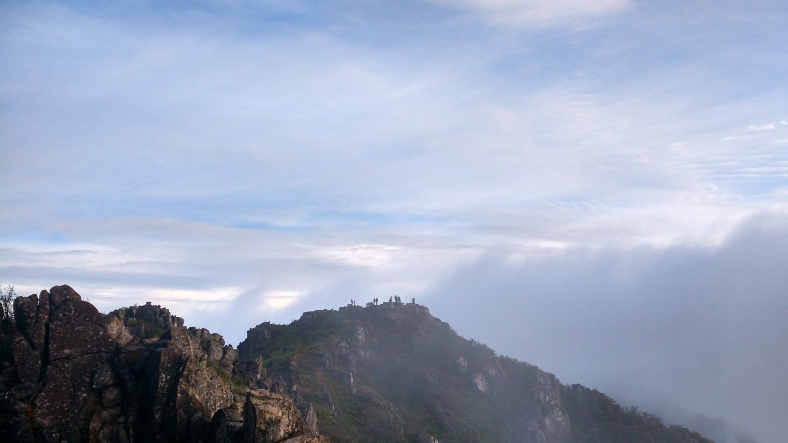

发信人: dahouzi (猴子), 信区: outdoor
标 题: 清凉峰石猴
发信站: 饮水思源 (2015年10月09日10:17:48 星期五)
这两天outdoor版终于不冷清了，我也来凑个热闹~~~先来点重口的，借用磅礴的一句
话，“水里有屎，屎里有毒”，从头污到尾的某组。。。。。。
接着安利一款软件，详情请往前翻小怪兽的推荐帖，下面上两张截图，蓝色为下载导
入的航迹，红色为我自己走的路线，可以看出至少在清凉峰小米4的GPS还是相当准确的，
第一张为第一天走的，第二张为全程（启程并没有从起点开始记录，否则会是一个完美的
环），第三张为统计信息。

screen.width - 200){this.width = screen.width - 200}">
screen.width - 200){this.width = screen.width - 200}">
清凉峰山顶云海超赞，下山路可以玩的很high，可攀的岩石较多，我给好评。具体的
线路情况请等领队组总结，我主要上图~~~~~~
就喜欢重口的，来张蚂蝗吧，全队只有某磊被蚂蝗KISS，还是两次，这次带的二锅头又没
用上，结果从衢州36湾就准备的防蚂蟥用的二锅头，在衢州喝了一瓶，在清凉峰喝了一瓶
~~~~~~
screen.width - 200){this.width = screen.width - 200}">
清凉峰营地很大，可选择的扎营地点特别多，几经波折，最终我把帐篷扎在了一个四
周寂寥无人的地方，然而睡到半夜听到外面有两只动物互相叫嚣~~~~~~（晚上一个人打着
头灯搭的帐篷，所以这画质就不要吐槽了，不要问我为什么晚上一个人打着头灯选了一个
四周没人的地方搭帐篷~~~~~~）
screen.width - 200){this.width = screen.width - 200}">
多图多图 早期的鸟儿有虫吃 清凉峰顶的云海~~~~~~
screen.width - 200){this.width = screen.width - 200}">
screen.width - 200){this.width = screen.width - 200}">
screen.width - 200){this.width = screen.width - 200}">
screen.width - 200){this.width = screen.width - 200}">
screen.width - 200){this.width = screen.width - 200}">

screen.width - 200){this.width = screen.width - 200}">
screen.width - 200){this.width = screen.width - 200}">
screen.width - 200){this.width = screen.width - 200}">
screen.width - 200){this.width = screen.width - 200}">
站在清凉峰顶往南（没记错方向的话）看去有几座稍低一点的峰顶，然后，可以过去
，嗯，可以过去~~~~~~小路+入门级抱石~~~~~~
screen.width - 200){this.width = screen.width - 200}">
screen.width - 200){this.width = screen.width - 200}">
 screen.width - 200){this.width = screen.width - 200}">
screen.width - 200){this.width = screen.width - 200}">
screen.width - 200){this.width = screen.width - 200}">
此时此刻，站在清凉峰顶看我的话，是什么呢~~~~~~
screen.width - 200){this.width = screen.width - 200}">
screen.width - 200){this.width = screen.width - 200}">
没错 我是dahouzi~~~~~~
来一张押队帅照（目测身后巨石可攀）
screen.width - 200){this.width = screen.width - 200}">
遗憾的是野猪塘去不了~~~~~~

放图结束 最后 水里有屎 屎里有毒
--
※ 来源:·饮水思源 bbs.sjtu.edu.cn·[FROM: 10.184.57.34]
|